Creating the reviewer recruitment form and assign categories
Learn how to create your reviewer form, either manually or bulk upload reviewers, how to use the reviewer table and assign categories to reviewers.#
Skip to:
How To Create The Reviewer Recruitment Form
Delete A Question From The Review Form
How To Publish/Unpublish The Review Form
Where To Get The Link For The Reviewer Form
How To Add Reviewers
From your dashboard, navigate to the left-hand navigation panel, click on Event Set Up and then click on Manager Reviewers.
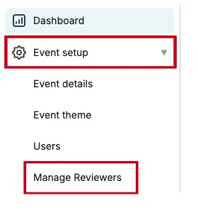
On the next screen, you will see that you can either upload reviewers manually by adding their emails individually, or download a template to add the necessary information and bulk upload your reviewers.
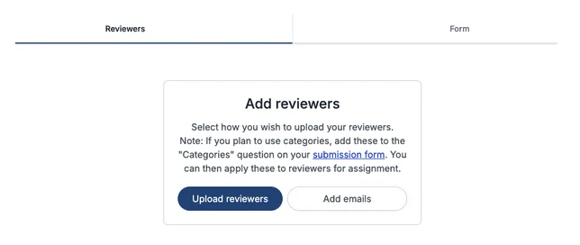
To add reviewers via their email address (manually), click on the Add emails button and then enter their email address, one per line.
When complete, click on Add Reviewers.
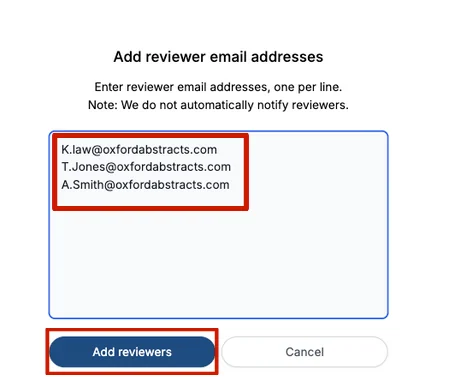
If you have many reviewers to add, you can ‘add them in bulk’ by clicking on the Upload Reviewers button.
You will then need to click on the Download a Template button to fill in reviewer email addresses and the categories that admins have already set.
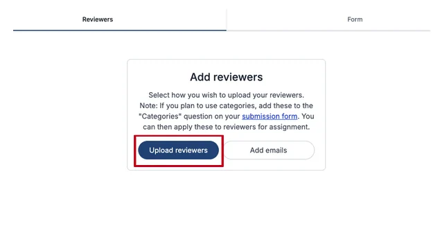
Once complete, you then save this template as a CSV file, drag and drop it into the Upload reviewers box, and click on the Upload reviewers button (image below).
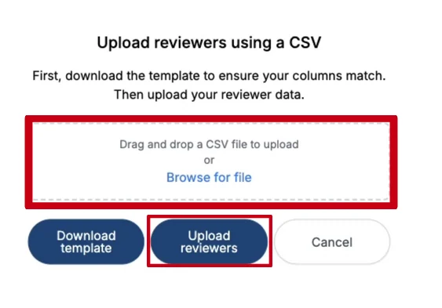
When you have added your reviewers, you’ll be able to view them all on the Reviewer Table found under Event Setup > Manage Reviewers on the left-hand menu.
On the Reviewer table, you can make several alterations, including:
-
View the list of categories associated with your submission form.
-
Change the status of the reviewer, for example, admins can decide whether they would like to Accept, Reject, or Withdraw reviewers. They will all be uploaded as pending until an admin decides on their status.
2.a You can also Bulk decide this stage by selecting all reviewers and clicking on the Bulk Decide button.
-
You can delete reviewers by selecting the reviewer and clicking on the bin button.
-
You can download the data from the table by clicking on the download arrow.
-
You can email reviewers by selecting the reviewer/s you wish to email and click on the email button.
6.The column button allows you to select which columns you want shown in the table.
- The Add Reviewer button allows you to add reviewers.
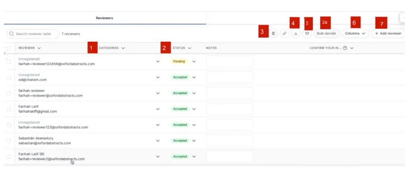
How To Create The Reviewer Recruitment Form
The Reviewer Form is where you create the form you send to Reviewers to complete.
To access it, go to the left-hand menu from your dashboard, click on Event Setup > Manage reviewers > then click on Form (the second tab at the top of the page).
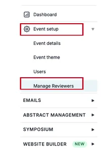
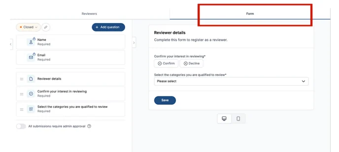
The form will come with standard questions, including:
Name
Email address
Reviewer details
Confirmation of interest to review
Select categories they’re qualified to review.
You can add your own questions to the form, to do this click on the Add question button at the top of the page.
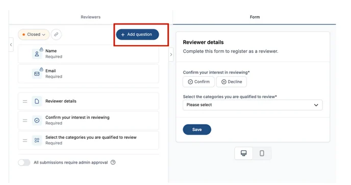
A pop-up will appear where you can choose the question format you want to add.
For example, do you want a yes/no question, do you want the reviewer to write an answer to your question, or do you want your question to have answers in a drop-down format or check box?
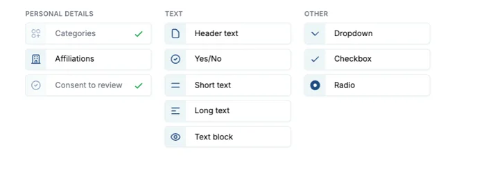
Select the question format you want, follow the instructions, fill in the boxes on the next screen that pops up to the right, toggle the Required toggle to ON (this will turn from grey to blue), and click save.
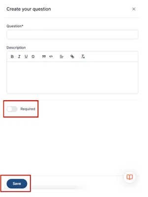
On the right of the screen under the Form tab, you will have a preview of what your reviewer form will look like to users. You can select whether you want to view it in desktop or mobile mode by clicking on the computer or mobile icons.
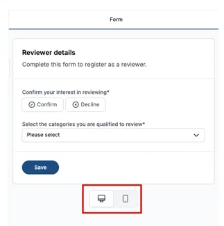
How To Delete Question A From The Reviewer Form
To delete a question from the reviewer form, place your mouse on the question and to the right, a red bin icon will appear, click on this to delete the question.
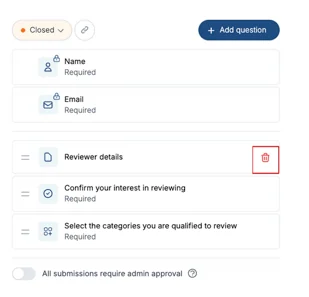
How To Publish/Unpublish The Reviewer Form
To ensure your reviewers can complete the Reviewer form, you need to toggle on the Closed toggle at the top of the page.
When it is Orange, the reviewer form is closed and cannot be accessed by the reviewer.
When it is Green, the reviewer form is open and can be completed by the reviewer.
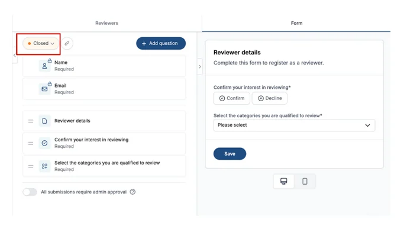
The Review Form Link
You’ll need to send the reviewers the link to the form which can be found next to the Closed/Open Toggle at the top of the page. All you need to do is click on it, then go to the email you’re sending out and click paste.
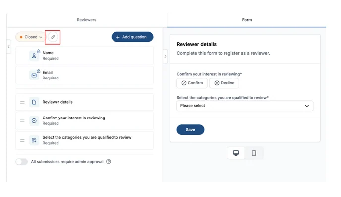
How To Accept Reviewers
When you toggle on (toggle will be blue) the All submissions require admin approval, this means when a reviewer completes their reviewer form, an admin has to then either accept or reject it.
If the toggle is left to “off” (toggle will be grey) then a reviewer will automatically be accepted.
Leave the toggle off if you would like to accept reviewers automatically.
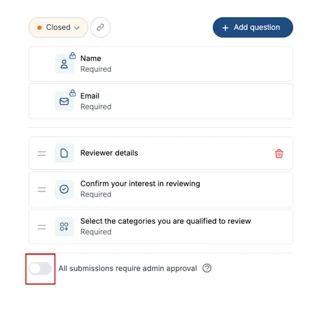
Please note: IMPORTANT.
If an admin goes into a completed review form and makes any amendments, such as adding the categories they want that reviewer to review, the reviewer will no longer be able to go into their form and make any changes.
However, if an admin makes a change to a completed form on the reviewer table(not clicking and entering the individual form), the reviewer will still be able to make changes to their reviewer form.
Should you require further assistance then please get in touch with our Support Team via this Contact Form.
Did this page solve it?
Thanks — this helps us fix it.
Didn't solve it? Ask our support team
No question is too small, and there's no charge for asking. Raise a ticket and someone who knows the software will pick it up.